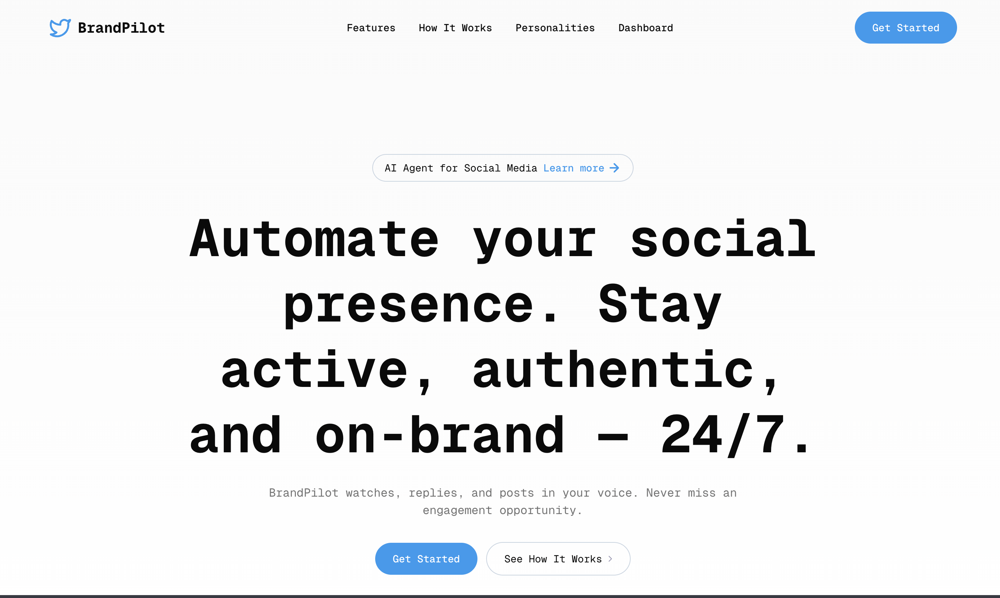

Replic-AI / BrandPilot
An AI social-media agent that keeps startups active online — no full-time marketer required.

Overview
Replic-AI (BrandPilot) helps early-stage startups maintain an active, authentic online presence without hiring a marketer. It monitors X and Reddit for brand mentions and keywords, auto-generates on-brand replies and daily posts, and routes everything through a founder for approval — from a multi-brand dashboard or straight from iMessage. Built in a weekend at HackPrinceton 2025.
What it does
Social monitoring
Continuously watches X and Reddit for brand mentions and relevant keywords.
AI content generation
Drafts on-brand replies and daily posts with xAI Grok for authentic engagement.
Multi-brand dashboard
Real-time activity logs and management built on Next.js + Supabase.
Chat-native approvals
Founders approve, edit, or reject posts directly from iMessage.
FastAPI backend
Python backend with Redis caching for efficient processing and fast responses.
Composio integration
Workflow automation linking social platforms and messaging services.
Stack
Next.js · React · TypeScript · Python · FastAPI · Supabase · Redis · xAI Grok · Composio · WhatsApp API